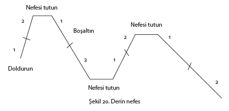
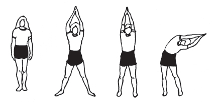

Stresin verdiği zararları nasıl ortadan kaldırabiliriz ve stresi nasıl gelişme yolunda bir araç olarak kullanabiliriz?
Şurası muhakkak ki, sağlıklı yaşamak için “stresi olmayan bir hayat dileyerek”, stresin yol açtığı zararlardan ve muhtemel tehlikelerden uzak duramayız. Çünkü hem stres veren pek çok şey hayatın içinde vardır, hem de stres vericilerin bir bölümü başarı için gerekli olan dinamizmin ve gelişmenin sebebidir.
Hayatı daha zengin ve doyumlu yaşamanın ön şartı alternatif yaratabilmektir. “Bu durumda bir tek şey yapılabilir, o da benim yaptığım” diye düşünmek veya “Aynı durumla karşılaşsam yine aynı şeyi yaparım” demek hayatı daraltmak, tecrübelerden ders almamak ve başarısızlık ihtimalini artırmaktır. Alternatif yaratabilmek için zekâ, bilgi, cesaret ve istek gerekir. Hayatın kontrolünü ele almak için gerekli olan bilgiyi edindikten sonra, bu bilginin verdiği cesaretle girişimde bulunma isteği alternatif yaratmayı mümkün kılar. Elinizdeki kitabın ve Stresle Başaçıkma Programının kaleme alınma amacı da budur.
Her ne kadar stres sırasında bedende meydana gelen düzenlemeler canlının, canlılığını sürdürmek amacını taşıyorsa da, 20.yy’ın tehlike ve tehditlerinin yol açtığı stresler büyük çoğunlukla orijinal stres tepkisi sırasındaki bedensel düzenlemelere ihtiyaç duyurmamaktadır. İnsanın kendisinden güçlü olan düşmanıyla mücadele etmek için kanına boşalan şeker ve yağa ihtiyacı vardır, ancak tiyatroya geç kaldığı için veya trafikte bir araba kendisini güç durumda bıraktığı zaman kanına boşalmış olan yağ ve şekere hiç ihtiyacı yoktur.
Daha önce de belirtildiği gibi beynimiz çağın hızla gelişen şartlarına uyarken, bedenimiz bu konuda geride kalmış ve canlılık tarihi içinde geliştirip getirdiği tepki zincirini kullanmaya devam etmiştir.
Ekte anlatıldığı gibi, evrimin mantığı açısından bakıldığında uzun dönem içinde hiç şüphesiz insana zararlı olan bu mekanizma değişecektir. Önceki bölümlerde kullandığımız ifade burada da tekrarlanabilir: Günümüz insanlarının büyük atalarından daha zayıf, daha akıllı ve daha becerikli olmalarının sebebi bu değişimdir. Evrim felsefesinin özündeki mantık budur. Türler yeni bir mücadelenin gerektirdiği şartlara, bedensel yapılarını, fizyolojik organizasyonlarını ve davranışlarını değiştirerek uyarlar. Fakat –bilindiği gibi– bu son derece yavaş işleyen bir süreçtir. Şartlar böyle devam ettiği takdirde belki 500 bin yıl sonra, insan organizması kendini bu yanlış alarm tepkisinden kurtaracaktır. Fakat şüphesiz bu gelişimin bugünü yaşayan ve faturayı ödeyen insanlara yararı olmayacaktır.
Bir tek cümleyle özetlemek gerekirse, canlılık “değişen şartlara uyum” olduğuna göre, hayatta kalmak ve sağlıklı yaşamak için şartların değişmesi beklenemez. Bu sebeple insan, sağlıklı yaşamak için “stresi olmayan bir hayat” dileyemez.
İnsana stres tepkisini yaşatan sebeplerin çok çeşitli olduğu daha önceki bölümlerde anlatılmıştı. Ancak kısaca tekrarlamak gerekirse, stres insanın dışındaki şartlardan ve içinden –dünyaya bakış biçiminden– kaynaklanmaktadır.
“Bu yaştan sonra değişebilir miyim?”
“Değişebilir miyim?” Gönül bu soruya hiç duraksamadan “Evet” diyebilmeyi isterdi. Ancak…
Bu soruya kolayca “evet” diye cevap vermek ne yazık ki çok zordur. İnsan temel alışkanlık ve tavırlarını çok önemli ölçüde hayatının ilk yıllarında kazanır. Öfkemizi, sevincimizi dışlaştırma biçimimiz, yemek yeme alışkanlığımızın belirlenmesinde ilk yıllar “hayati” önem taşımaktadır. Bu alışkanlık ve tavırlar beyindeki hücreler arasında kurulan çok kuvvetli bağlarla, yıllarca süren tekrarlarla binlerce-on binlerce defa pekişerek ve kuvvetlenerek kişiye mal olur.
Kişi günün birinde bunların veya sonradan edindiği başka tavır ve alışkanlıkların kendisi için yararlı olmadığını, hayatını zorlaştırdığını görürse ne olur?
Kısacası, insan kendisini değiştirebilir mi, alışkanlıklarından vazgeçip yeni alışkanlık ve tavırlar geliştirebilir mi? EĞER
1- Değişimin gerekli olduğuna inanır ve değiştirmek isterse
2- Bu değişimin nasıl olacağı konusunda bir yol gösterenle işbirliği yaparsa
3- Yeni öğrendiğini bıkmadan usanmadan defalarca tekrarlarsa
EVET
Yukarıda sıralanan faktörlerin hepsi çok önemli olmakla beraber, üçüncü madde en büyük önem derecesine sahiptir. Çünkü birçok kimse birinci maddedeki isteği zaman zaman duyup, ikinci maddeye adım atar, ancak üçüncü maddede belirtilen “sebat”ı gösteremez. Halbuki değişimi gerçekleştirecek en önemli faktör budur.
Öğrenme, tekrar veya yaşantı yoluyla davranışta veya bilgi düzeyinde meydana gelen oldukça devamlı bir değişikliktir. Öğrenme soyut bir olay değildir. İnsanın herhangi bir davranış veya bilgiyi öğrenmesi ve kendisine “mal etmesi” için beyindeki sinir hücreleri arasında kalıcı bir bağlantının kurulması gerekir. Sinir hücreleri arasındaki bu kalıcı bağlantıyı sağlayacak olan, tekrarlardır.
Stresle başaçıkmak, ruh ve beden sağlığını korumak, üretici ve verimli bir hayat yaşayabilmek için gerekli olan beceriler bir program çerçevesinde öğrenilebilir.
Stresle başaçıkma becerisi 8-12 kişinin yer aldığı bir gruba katılarak yürütülebileceği gibi, bu bölümde ana hatları verilen yaklaşımlar adım adım ve sadakatle izlenerek de geliştirilebilir.
Yıllardır stres ve stresin yol açtığı problemlerle ilgilenmenin ve stresle başaçıkma konusunda programlar yönetmenin sonucu olarak bizde uyanan izlenim şudur: Bir grup insan stresle, görünüşte kendileriyle aynı ölçüde zor ve mücadeleli yaşayanlardan daha iyi başaçıkmakta, stresten daha az etkilenmektedir.
İkinci bir grup, stresle nasıl başaçıkılacağı konusunda, takvim arkasından öğrenecekleri veya yarım saatlik bir konuşmayı dinleyerek edinecekleri sihirli formüllerle hayatlarını değiştireceklerine inananlardır.
Üçüncü grupta yer alanlar, hayat biçimlerinden veya sürdürdükleri hayatın kendi üzerlerinde bıraktığı izlerden memnun olmayıp bunu değiştirmek için ciddi istek duyanlardır. Bu gruba girenler hayata yaklaşımlarında bir şeylerin aksadığının farkında olup, bunu nasıl değiştirebileceklerinin arayışı içindedirler.
Dördüncü gruptakiler ise, hayatlarında bir şeylerin aksadığını bildikleri halde, bundan hem şikâyetçi, hem de memnun olanlardır. Bu gruba girenler, edindikleri bilgileri yeri geldikçe uygulama ve kullanma eğilimindedirler.
Bu kitapta yer alan bilgiler, özellikle “Stresle Nasıl Başaçıkılır?” bölümü, yukarıda sıralanan dört gruba da, ancak özellikle üçüncü ve dördüncü grupta yer alanlara yönelik olarak kaleme alınmıştır.
Stresle başaçıkma programından öğrenilecek olanlar farklı bir hayat yorumunu beraberinde getirecektir. Seminerlere katılanlara da söylediğimiz gibi, stresle başaçıkmak konusunda “her şey” bu kitabın okunmasından sonra bitmeyecek, hatta –deyim yerindeyse– “her şey” bu kitabın okunmasından sonra başlayacaktır.
Dış dünyada meydana gelmiş olanın önüne geçilemez. Ancak biz tepkimizi kontrol edebiliriz. Oysa çok kere tersini kabul etmek işimize gelir.
Bu bölümde hayatın çeşitli cephelerinden yansıyan mesajlarla ve karşılaşılan durumlarla ilgili gerçekçi yorumlar yapmanıza ve bunlarla etkili biçimde başaçıkmanıza yardımcı olacak, somut, pratik ve gerçekçi bilgi, öneri ve teknikler yer almaktadır.
Bir işe başlarken amaçların belirlenmesi her zaman yararlıdır. Bu sebeple stresle başaçıkma programını uygulamak için belirlediğiniz amaçları ve sebepleri aşağıya kaydedin.
1) ……………………………………………………………………………
2) ……………………………………………………………………………
3) ……………………………………………………………………………
1) ……………………………………………………………………………
2) ……………………………………………………………………………
3) ……………………………………………………………………………
Daha önce de belirtildiği gibi, stres dış dünyanın bireyi tehdit eden, zorlayan şartlarından kaynaklanabileceği gibi, insanın dünyaya bakış ve dış dünyadan gelen bilgileri yorumlayış biçiminden de kaynaklanabilir.
Aşağıda yer alan ölçekte stres vericiler dört esas grupta toplanmıştır. İnsan ilişkilerinden kaynaklanan, “sosyal” stres vericiler, iş hayatından kaynaklanan “işle ilgili” stres vericiler, fizik çevreden kaynaklanan, gürültü ve hava kirliliğini de içine alan “fizik çevre” stres vericileri ve kişinin dünyadan yansıyan bilgileri yorumlayış biçiminden kaynaklanan “kendini yorumlama” (iç konuşma) ile ilgili stres vericiler.
Bu ölçeği kendinize uygulayarak hayatınızda sizi zorlayan, bunaltan ve sağlığınızı tehdit eden stresin kaynağı konusunda bilgi sahibi olmanız mümkündür.
Bu bölümün daha sonraki sayfalarında fizik çevreden kaynaklanan stres vericiler dışındaki stres kaynakları ile daha etkili bir biçimde mücadele etmenize yardımcı olacak bilgileri bulacaksınız.
Aşağıdaki durumlar, stres verici bulduğumuz günlük şartlardır. Her birini okuyarak, kendinize uyan durumları satırın soluna işaretleyiniz. Sonra işaretlenmiş durumlara dönerek sizin için bunlar hangi sıklıkta oluyorsa o sıklığın numarasını daire içine alınız.
Aşağıdaki ifadelerin yanında parantez içinde bulunan semboller vericilerin türünü belirtmektedir. F (Fizik çevre stres vericileri), S (Sosyal stres vericiler), İ (İş hayatındaki stres vericiler) ve KY (Kendini yorumlama biçiminden kaynaklanan stres vericiler).
Asla-1
Seyrek Olarak-2
Bazen-3
Sık Sık-4
Her Zaman-5
…. 1- Yabancılarla karşılaşmaktan rahatsız olurum (S)/(KY). 1 2 3 4 5
…. 2- Bir grup önünde konuşurken rahatsız olurum (KY). 1 2 3 4 5
…. 3- İstediklerimi yapıp yapamayacağım konusunda kuşku
duyarım (KY). 1 2 3 4 5
…. 4- Birlikte çalıştığım insanların yaptığım iş konusunda
fikirleri yok (İ). 1 2 3 4 5
…. 5- Amirlerimle görüş ayrılıklarım var (İ)/(S) 1 2 3 4 5
…. 6- İşte zamanımı alan, birbirleri ile çatışanlardır (İ). 1 2 3 4 5
…. 7- “Yöneticilik” konusunda kendime güvenmiyorum (İ). 1 2 3 4 5
…. 8- “Yönetim” işim arasında yeni taleplerde bulunarak
beni engeller (İ). 1 2 3 4 5
…. 9- Çalışmam gerekenlerle benim bölümüm arasında
çatışma var (İ). 1 2 3 4 5
…. 10- Sadece yaptığım iş yetersiz olduğu zaman beni
hatırlarlar (S). 1 2 3 4 5
…. 11- Beni etkileyecek olan kararlar veya değişiklikler, bilgim
olmadan veya bana sorulmadan yapılır (İ). 1 2 3 4 5
…. 12- Yapacak çok işim ve çok az zamanım var (KY). 1 2 3 4 5
…. 13- İşimde yaptıklarımdan daha fazla niteliklerim
olduğunu düşünüyorum (KY). 1 2 3 4 5
…. 14- Şu sırada yapmakta olduğum iş için yetersiz
olduğumu hissediyorum (KY). 1 2 3 4 5
…. 15- Yakın olarak çalıştığım mesai arkadaşlarım, benden
daha farklı alanlarda eğitim yapmışlar (İ). 1 2 3 4 5
…. 16- İşimi yapabilmem için, başka bölümlere de gitmem
gerekir (İ). 1 2 3 4 5
…. 17- İşyerimdeki insanlarla veya ailemle olan çatışmaları
çözümleyemem (İ)/(S). 1 2 3 4 5
…. 18- Diğer bölümlerle olan çatışmaları çözümleyemem (İ). 1 2 3 4 5
…. 19- Birlikte çalıştığım insanlardan çok az kişisel
destek alırım (S). 1 2 3 4 5
…. 20- Bir plan üzerine çalışmak yerine vaktimi onunla ilgili
güçlükleri yenmek için harcıyorum (İ). 1 2 3 4 5
…. 21 Fazla mesailer ve hafta sonunu da içine alan iş koşullarım
sebebiyle ailemin baskısını hissediyorum (S). 1 2 3 4 5
…. 22- Kendi kendime zaman sınırlamaları koyarım (KY). 1 2 3 4 5
…. 23- Daha alt derecedeki kişilere (veya çocuklara)
olumsuz bir şey söylemem zor olur (S). 1 2 3 4 5
…. 24- Saldırgan kişilerle başa çıkmakta güçlük çekerim (S). 1 2 3 4 5
…. 25- Pasif kişilerle iş yapmakta güçlük çekerim (S). 1 2 3 4 5
…. 26- Birbirleri ile çakışan sorumluluklar beni güç durumda
bırakır (İ). 1 2 3 4 5
…. 27- Yaşıtlarım arasındaki bir çatışmada hakemlik yapmaktan
rahatsız olurum (S). 1 2 3 4 5
…. 28- Benden küçükler (veya çocuklar) arasındaki bir çatışmada
hakemlik yapmaktan rahatsız olurum (S). 1 2 3 4 5
…. 29- Yaşıtlarımla çatışmaya girmekten kaçınırım (S). 1 2 3 4 5
…. 30- Amirlerimle çatışmaya girmekten kaçınırım (S). 1 2 3 4 5
…. 31- Astlarımla çatışmaya girmekten kaçınırım (S). 1 2 3 4 5
…. 32- Karmaşık işler canımı sıkar (İ). 1 2 3 4 5
…. 33- Kişisel ihtiyaçlarım, işyerim ile
çatışma halindedir. (İ)/(KY). 1 2 3 4 5
…. 34- Gürültülü çevrem beni rahatsız ediyor (FÇ). 1 2 3 4 5
…. 35- Bir iş üzerinde dikkatimi toplamakta
zorluk çekiyorum (KY). 1 2 3 4 5
…. 36- Eşimin benden birçok istekleri var (S). 1 2 3 4 5
…. 37- Ebeveynimin sağlığı ile ilgilenmem gerekli (S). 1 2 3 4 5
…. 38- Çocuklarımla iletişim kurmakta güçlük
çekiyorum (S). 1 2 3 4 5
…. 39- Hissettiklerimi söylemekte güçlük çekiyorum (KY). 1 2 3 4 5
…. 40- Çalıştığım yerde çok sigara içiliyor (FÇ). 1 2 3 4 5
…. 41- Çalıştığım yerdeki koku beni rahatsız ediyor (FÇ). 1 2 3 4 5
…. 42- Oldukça gürültülü bir yerde çalışıyorum (FC), (İ). 1 2 3 4 5
…. 43- Oturduğum yerdeki çevre kirliliğinden şikâyetçiyim (İ )/(FÇ). 1 2 3 4 5
Şimdi stres verici şartlarınız açısından kendi kendinize bir değerlendirme yapabilirsiniz.
Sosyal stres vericilerden toplanması mümkün en yüksek puan 85, işle ilgili stres vericilerden 80, kendini yorumlama biçiminden 50, fizik çevreden yansıyanlar açısından ise 25’tir.
Her stres vericiden alınan puanları dört grupta değerlendirmek gerekir.
1. grup: Sağlığı tehdit edici bir nitelik taşımıyor.
2. grup: Hastalık geliştirme ihtimali var.
3. grup: Hastalık geliştirme eğiliminde.
4. grup: Hastalık geliştirme ihtimali oldukça yüksek.
Sosyal stres vericilerden 85-60 puan alanlar 4. gruba
59-40 puan alanlar 3. gruba
39-25 puan alanlar 2. gruba
24-17 puan alanlar 1. gruba
girerler.
İşle ilgili stres vericilerden 80-60 puan alanlar 4. gruba
59-40 puan alanlar 3. gruba
39-25 puan alanlar 2. gruba
24-15 puan alanlar 1. gruba
girerler.
Kendini yorumlama biçiminden 50-35 puan alanlar 4. gruba
kaynaklanan stres vericilerden 34-25 puan alanlar 3. gruba
24-15 puan alanlar 2. gruba
14-10 puan alanlar 1. gruba
girerler.
Fizik çevreden yansıyan stres 25-18 puan alanlar 4. gruba
vericiler açısından 17-13 puan alanlar 3. gruba
12-8 puan alanlar 2. gruba
7-5 puan alanlar 2. gruba
girerler.
Her insan için gerilim ve kaygıyı belirleyen farklı tepkiler söz konusudur. Aşağıda stres sırasında verdiğiniz bedensel tepkiyi ortaya koyduğunuz organı veya bölgeyi işaretleyiniz.
|
Asla |
Ara sıra Seyrek olarak |
Baten |
Sıksık |
Her zaman |
|
|
1- Gerginliği nerenizde hissedersiniz? a) Alnınızda b) Ensenizde c) Göğsünüzde d) Omuzlarınızda e) Midenizde f) Yüzünüzde g) Diğer yerlerde |
— — — — — — — — |
— — — — — — — — |
— — — — — — — — |
— — — — — — — — |
— — — — — — — — |
|
2- Terler misiniz? |
— |
— |
— |
— |
— |
|
3- Kalbiniz hızla çarpar mı? |
— |
— |
— |
— |
— |
|
4- Kalbinizin atışını hissedebilir misiniz? |
— |
— |
— |
— |
— |
|
5- Kalbinizin atışını duyabilir misiniz? |
— |
— |
— |
— |
— |
|
6- Yüzünüze ateş basar mı? |
— |
— |
— |
— |
— |
|
7- Elleriniz soğuk ve nemli midir? |
— |
— |
— |
— |
— |
|
8- Titreme veya seğirmeleriniz olur mu? a) Ellerinizde b) Bacaklarınızda c) Diğre yerlerde |
— — — — |
— — — — |
— — — — |
— — — — |
— — — — |
|
9- Mideniz bir asansörünani duruşundaki |
— |
— |
— |
— |
— |
|
10- Mideniz bulanır mı? |
— |
— |
— |
— |
— |
|
11- Kendinizi sımsıkı tutulmuş, sıkıştırılmış gibi hisseder misiniz? |
— |
— |
— |
— |
— |
|
12- Vücudunuzun belirli bir bölümünü |
— |
— |
— |
— |
— |
|
13- Ayak ayak üzerine attığınızda, ayağınızı |
— |
— |
— |
— |
— |
|
14- Tırnaklarınızı yer misiniz? |
— |
— |
— |
— |
— |
|
15- Dişlerinizi gıcırdatır mısınız? |
— |
— |
— |
— |
— |
|
16- Konuşma probleminiz var mı? |
— |
— |
— |
— |
— |
|
17- Boğuluyormuş gibi bir duygunuz olur mu? |
— |
— |
— |
— |
— |
|
18. İsteksizlik hisseder misinizi? |
— |
— |
— |
— |
— |
|
19- Sersemlik hisseder misiniz? |
— |
— |
— |
— |
— |
|
20- Soluk soluğa olduğunuzu fark eder misiniz? |
— |
— |
— |
— |
— |
Gerilimli ve kaygılı olduğunuz zamanlarda bu duygudan kurtulmak için ne yaparsınız?
Gerilim ve Kaygı Ölçeği’nde “sık sık” ve “her zaman” sütunlarını işaretlediğiniz tepkiler, sizin kişisel olarak gerilim karşısında ve kaygı doğuracak bir durumla karşılaştığınız zaman, stresinizi bedensel olarak ifade ettiğiniz özel yerlerdir.
Daha sonraki sayfalarda “gevşeme egzersizleri”ni uygulamaya başladıktan sonra, bedeninizde “gerginliği tararken” dikkatinizi özellikle Gerilim ve Kaygı Ölçeği’nde “sık sık”, “her zaman” olarak işaretlediğiniz yerler üzerinde toplayın.
İnsanların hayatlarında meydana gelen olayların ve günlük hayat akışlarındaki değişikliklerin hastalığa nasıl sebep oldukları, sağlığı nasıl temelinden etkileyebildikleri “Değişiklik, Kayıp ve Stres” bölümünde ayrıntılarıyla anlatılmıştı.
Aşağıda Holmes ve Rahe tarafından geliştirilen ve birçok araştırmaya konu olan Yakın Zaman Hayat Olayları Listesi yer almaktadır.
Görüleceği gibi ölçeğin birinci bölümünde yer alan 12 olay bir kere bile yaşanmış olsa işaretlenmesi gerekmektedir. İkinci bölümde yer alan 30 olayın ise son bir yıl içinde yaşanıp yaşanmadığı, yaşandıysa kaç kere yaşandığı sorulmaktadır. Bu bölümde yer alan olaylardan bir tanesini son iki yıl içinde üç kere yaşayan bir kişinin o maddeye ait ağırlıklı puanı üçle çarpması gerekmektedir.
“Değişiklik, Kayıp ve Stres” bölümünde ayrıntılarıyla anlatıldığı gibi, insan, hayatında ne kadar çok değişiklik ve kayıp yaşamışsa, sağlığını kaybetme ihtimali o ölçüde artmaktadır.
Yakın Zaman Hayat Olayları Listesi’nden aldıkları puan 300’ün üzerinde olanların “yakın gelecekte” hasta olma ihtimalleri % 80’dir. Puanı 150-299 arasında olanlar için yakın gelecekte hastalık ihtimali % 50’dir. Puanı 150’nin altında olanlar için bu risk % 30’dan daha azdır.
Yukarıdaki ürkütücü sayıları bir başka biçimde ifade etmek gerekirse puanı yükseldikçe, kişinin sağlığını korumak için daha çok aktif çaba harcaması gerekmektedir.
Ayrıca bazı streslerin, üç veya beş yıl önce meydana gelmiş olsa bile, etkilerinin ve doğurduğu sonuçların devam etmesi mümkündür. Bu sebeple etkilerini halen sürdürmekte olduğuna inandığınız daha eski yaşantılarınızı da, ağırlıklı puanını hesaplayarak, toplam puanınıza ekleyebilirsiniz.
Türkiye ile ilgili değerler
Holmes ve Rahe’in geliştirdiği Yakın Zaman Hayat Olayları Listesi, ABD hayat biçimi ve normlarına göre düzenlenmişti. Bu sebeple Ege Üniversitesi’nden Dr. Salamon Sorias yeni yaşantılar ve kayıpların Türkiye için ağırlıklı stres puanlarını saptamak üzere girişimde bulunmuştur.
Biraz daha ayrıntılı ve uzun olan bu ölçekteki değerlerden bazıları şöyledir:
Çocuk ölümü 92
Eşin ölümü 90
Eşin aldatması 87
Ana-baba ölümü 87
Hapis 86
Çocuğun ağır hastalığı ve yaralanması 85
Evlilik dışı hamilelik 83
Aile tarafından istenmeyen evlilik 83
Eşin ciddi hastalığı veya yaralanması 79
Ana-babanın ağır hastalığı veya yaralanması 78
İşten çıkarılma 76
Boşanma 73
Hakkında dedikodu çıkartılmak 72
İstenmeyen hamilelik 65
Aşağıda insanların hayatları boyunca karşılaşabilecekleri olayların bir listesi vardır. Lütfen bunları dikkatle okuyun. Listede yer alan ilk 12 olayı son bir yıl boyunca yaşadıysanız, olayın stres değerini yandaki sütuna yazın.
|
BÖLÜM 1 |
Stres değeri |
Hayat değişikliği birimi |
|
1) Patron veya amirle problem |
23 = |
––––––––––– |
|
2) Uyku alışkanlığında önemli bir değişiklik (daha çok veya daha az uyumak veya uyku saatinde bir değişiklik) |
16 = |
––––––––––– |
|
3) Yeme alışkanlığında önemli bir değişiklik (daha fazla veya daha az yemek veya yemek saatlerinin değişmesi gibi) |
15 = |
––––––––––– |
|
4) Kişisel alışkanlıklarda değişiklikler (giyim, tarz, ilişkiler, vb) |
24 = |
––––––––––– |
|
5) Alışılmış tipinizde büyük bir değişiklik |
19 = |
––––––––––– |
|
6) Sosyal faaliyetlerde önemli bir değişiklik (kulüp, kahve, sinema, ziyaret, vb) |
18 = |
––––––––––– |
|
7) Dinî alışkanlık ve uygulamalarda bir değişiklik |
19 = |
––––––––––– |
|
8) Aile bireylerinin bir araya geliş sıklığında değişiklik (alışılmıştan daha çok veya daha az) |
15 = |
––––––––––– |
|
9) Ekonomik durumda önemli bir değişiklik (süregelenden çok daha kötü veya daha iyi) |
38 = |
––––––––––– |
|
10) Polis veya kanunla ilgili problemler |
29 = |
––––––––––– |
|
11) Eşle olan tartışmalarda önemli bir artış (çocuk yetiştirme, kişisel alışkanlıklar gibi konularda alışılmıştan daha farklı problemler) |
35 = |
––––––––––– |
|
12) Cinsel problemler |
39 = |
––––––––––– |
Son bir yıl içinde aşağıda belirtilen olaylardan hangileri ile kaç kere karşılaştığınızı işaretleyip her olayın stres değerini, meydana geliş sayısı ile çarparak, o olay için “hayat değişikliği birimi”ni en sağdaki sütuna yazın.
|
BÖLÜM 2 |
Stres değeri |
Meydana geliş sayısı |
Hayat değişikliği birimi |
|
13) Önemli bir kişisel yaralanma veya hastalık |
53 |
x ––––– |
= –––––– |
|
14) Aileden yakın birinin ölümü (eş hariç) |
63 |
x ––––– |
= –––––– |
|
15) Eşin ölümü |
100 |
x ––––– |
= –––––– |
|
16) Yakın bir arkadaşın ölümü |
37 |
x ––––– |
= –––––– |
|
17) Aileye yeni birinin katılması (doğum, evlatlık edinme, büyüklerin eve yerleşmesi vb) |
39 |
x ––––– |
= –––––– |
|
18) Bir aile üyesinin sağlığında veya davranışında önemli bir değişiklik |
44 |
x ––––– |
= –––––– |
|
19) Başka bir yere taşınmak |
20 |
x ––––– |
= –––––– |
|
20) Hapsedilmek veya gözaltında tutulmak |
63 |
x ––––– |
= –––––– |
|
21) Yasalara karşı işlenmiş küçük suçlar (trafik cezaları vb) |
11 |
x ––––– |
= –––––– |
|
22) İş açısından önemli bir yeniden uyum dönemi (işi yönetenlerin değişmesi, bir başka kurum veya işletme ile birleşme, yeni organizasyon, iflas) |
39 |
x ––––– |
= –––––– |
|
23) Evlilik |
50 |
x ––––– |
= –––––– |
|
24) Boşanma |
73 |
x ––––– |
= –––––– |
|
25) Eşten ayrı yaşamak |
65 |
x ––––– |
= –––––– |
|
26) Önemli bir kişisel başarı |
28 |
x ––––– |
= –––––– |
|
27) Çocukların evden ayrılmaları (evlilik, yüksek tahsil, yatılıokul vb) |
29 |
x ––––– |
= –––––– |
|
28) Emekli olma |
45 |
x ––––– |
= –––––– |
|
29) İş saatleri veya şartlarında büyük değişiklikler |
20 |
x ––––– |
= –––––– |
|
30) İşteki sorumluluklarda önemli değişiklikler (terfi, statü kaybı, bir başka servise geçiş) |
29 |
x ––––– |
= –––––– |
|
31) İşten atılmak |
47 |
x –––––– |
= –––––– |
|
32) Yaşama şartlarında büyük değişiklik (yeni bir ev kurmak, yeniden döşemek, daha kötü bir ev veya semte taşınmak) |
25 |
x ––––– |
= –––––– |
|
33) Kadının ev dışında çalışmaya başlaması veya işten ayrılması |
26 |
x ––––– |
= –––––– |
|
34) Büyük miktarda borçlanmak (ev almak, iş kurmak, vb) |
31 |
x ––––– |
= –––––– |
|
35) Çok büyük olmayan bir miktarda borçlanmak (araba, renkli TV, video veya ev eşyaları almak için) |
17 |
x ––––– |
= –––––– |
|
36) İpotek veya ikraz’da mala veya paraya el konulması |
30 |
x ––––– |
= –––––– |
|
37) Tatil |
13 |
x ––––– |
= –––––– |
|
38) Yeni bir okula başlamak |
20 |
x ––––– |
= –––––– |
|
39) İşte farklı bir bölüme geçmek |
36 |
x ––––– |
= –––––– |
|
40) Resmi olarak eğitime başlamak veya bitirmek |
26 |
x ––––– |
= –––––– |
|
41) Eş ile barışma |
45 |
x ––––– |
= –––––– |
|
42) Hamilelik |
40 |
x ––––– |
= –––––– |
|
Toplam hayat değişikliği biriminiz |
–––––– |
Bedenin Gevşeme Cevabı
Bütün stres azaltma tekniklerinin son amacı, stresin yol açtığı istenmeyen sonuçları tersine çevirmek ve böylece stresin olumsuz sonuçlarını ortadan kaldırmaktır. Gevşeme cevabının öğrenilmesi ile, bedende stres sırasında ortaya çıkan durumun “tam tersi” meydana gelir.
Bunu daha açık olarak anlatmaya çalışalım: İlgili bölümde stres tepkisi sırasında beden kimyasında değişiklikler meydana geldiği ve bazı kimyasal maddelerin salgılandığı anlatılmıştı. İşte gevşeme cevabının öğrenilmesi ve uygulanmasıyla stres sırasında ortaya çıkan kimyasal maddeler kaybolur. Bu maddeler özellikleri gereği gevşeme cevabıyla aynı zamanda “var olamaz”lar. Bir başka biçimde ifade edersek, bedende aynı zamanda hem gerginliğin, hem de gevşemenin beden kimyası birlikte olamaz. Bu sebeple insan eğer stresi yaşıyorsa bedende ona ait beden kimyası egemendir.
1920’li yıllarda ilk defa Jacobson tarafından fark edilen bu durum, 1960’lardan sonra bir kalp uzmanı ve araştırmacı olan Herbert Benson tarafından bilim alanına bir teknik olarak kazandırılmıştır.
“Derin Gevşeme” duygusu, gevşekliğin bedensel durum ve özelliklerine bağlı olarak ortaya çıkartılabilir. Gerçekten gevşemeyi başarmış bir insanın, solunumu derin ve rahat, elleri ve ayakları sıcak ve ağır, kalp vuruşları sakin ve düzenli, karnı sıcak, alnı serindir. Bu durumdaki bir insanın kasları gevşemiş, hormonal dengesi sağlanmış ve beden metabolizması yavaşlamıştır.
Eğer insan yukarıda anlatılan gevşeme cevabının özelliklerinden birini gösterebilirse, stresin yarattığı fizyolojik ve biyokimyasal kısırdöngü kırılmış, onun yerine gevşemenin fizyolojik ve biyokimyasal kısırdöngüsü kurulmuş olur.
Solunum derinleşmesi (stres tepkisi sırasında hızlanır) kalp vurum sayısını azaltır (stres tepkisi sırasında artar), el ve ayaklara giden kan miktarının artması bu bölgede ısınma ve ağırlaşmaya sebep olur (stres tepkisi sırasında damarlar daralır, kan içeri çekilir, dolayısıyla yüzey sıcaklığı düşer). Bu durum (kan damarlarını sıkan küçük kaslarda olduğu gibi) bedenin bütün kaslarında gevşemeye ve rahatlamaya sebep olur.
Gevşemeyle ulaşılan kalp vurum sayısının azalması, kan basıncının düşmesi gibi sonuçların genel sağlık üzerindeki olumlu birçok etkisinin yanı sıra özellikle “yüksek tansiyon” tedavisinde sağladığı yararlar çok sayıda bilimsel araştırma ile ortaya konmuştur.
Gerginliğin herhangi bir dış uyaranla veya insanın düşünerek vardığı bir sonuçla başlaması üzerine, damarların üzerindeki küçük kasçıklar büzülerek damarları daraltmakta, daralan damarlar yüzeye giden kan miktarını azaltmakta, bu da organ sistemlerinin daha az beslenmesine yol açarak, hastalığa daha açık olmalarına ve o dokunun ait olduğu sistemin hayat süresinin kısalmasına zemin hazırlamaktadır.
“Önce nefes almayı öğrenin”
Otonom (kendi kendine çalışan) organlarımız olduğunu biliyoruz. Kalbimizin vuruşları, kan basıncımız, beden sıcaklığımız ve daha birçokları bu sisteme örnektir. Bu organlar veya fonksiyonlar bizim doğrudan denetim ve isteğimiz dışında çalışır. Ancak yine bilinmektedir ki, eğitim ve egzersizle bu organ ve fonksiyonları kısmen veya bütünüyle kontrol altına almak mümkündür.
Bedeni kontrol etme yolundaki çabaların ilk adımı solunumu kontrol etmektir. Çünkü solunum bir yönüyle, istediğimiz zaman nefes aldığımız, istediğimiz zaman nefesimizi tuttuğumuz için, irademizle yönlendirdiğimiz bir faaliyettir. Ancak diğer taraftan solunum, beyin sapındaki bir merkez tarafından kandaki oksijen ve karbondioksit dengesine göre bütünüyle otonom (kendi kendine) olarak yürüyen bir faaliyettir.
Yukarıda sayılan sebeplerden ötürü otonom faaliyetleri kontrol etmeye, “solunumu kontrol etmekten” başlamak çok anlamlıdır. Aynı zamanda doğru ve derin nefes almayı öğrenmek, gevşemeyi öğrenmek yolunda atılan en önemli adımdır.
Nefes almanın kendisi bir gevşeme yolu olduğu gibi, bütün gevşeme egzersizleri içinde, egzersizin bir parçası olarak kullanılmaktadır. Ayrıca nefes egzersizleri günlük hayatın akışı içinde uygulanması en kolay egzersizdir.
Nedir nefes almayı böyle önemli kılan?
Doğru ve derin nefes almanın kendisinin doğrudan damarları genişletme ve kanın (dolayısıyla oksijenin) bedenin en uç ve en derin noktalarına kadar ulaşmasını sağlama özelliği vardır.
Hatırlayacak olursanız, stres tepkisi sırasında kan beden yüzeyinden içeri çekiliyor ve yüzey sıcaklığı düşüyordu (el ve ayaklar soğuyordu). Yine hatırlarsanız, hem stres tepkisinin biyokimyasal maddeleri, hem de gevşemenin biyokimyasal maddeleri bir arada bulunamıyordu. Bu sebeple doğru ve derin nefes alarak sağlanan değişiklik özellikle kaygının da dahil olduğu birçok durumda kişinin başlayacak olan (veya başlamış olan) stres tepki zincirini kırmakta ve ters yöndeki zinciri başlatmaktadır.
İyi nefesin özellikleri
İyi nefes ağır, derin ve sessiz olmalıdır. Bunun için de denge, ölçü ve uyum gerekir. İyi bir nefes yavaş olarak burundan alınır, sessiz olur ve akciğerin bütününü doldurarak diyaframı aşağı iter.
Endüstrileşmiş ve şehirleşmiş toplumlarda yaşayan insanların büyük çoğunluğunun ciğerlerinin dörtte birini veya beşte birini kullandıkları saptanmıştır. Nefes egzersizlerinden amaç, akciğerin bütününü kullanmaktır.
Akciğerinizin üçe bölünmüş olduğunu düşünün. Derin, tam bir nefes, diyaframın aşağıya hareket etmesi ve akciğerin en alt bölümünün havayla dolmasıyla başlar. Daha sonra orta bölüm havayla dolar ve göğüs genişler. Son olarak da akciğerin üst bölümü dolar ve omuzlar hafifçe kalkabilir.
Şimdi yukarıda anlatıldığı gibi derin bir nefes alın ve anlatılan gelişmeyi gözleyin. Bu her zamanki nefes alışınıza benziyor mu?
Geleneksel eğitim biçimimizin bize kazandırdığı bir postür (beden duruşu) vardır: Mide içerde, göğüs dışarda. Ne yazık ki, bu duruş sağlıklı solunumu engelleyen bir duruştur. Doğru nefes alabilmek için diyaframın (ciğer boşluğunu, karın boşluğundan ayıran kas) akciğer boşluğunda emilim yaratmak için biraz aşağıya hareket etmesi gerekir. Aşağı doğru meydana gelen bu hareket karın boşluğunun dışarı çıkmasına sebep olur.
Bu tür nefesi daha iyi hissedebilmek ve bunu sık sık uygulayabilmek için sağ avucunuzun üstünü göbek deliğinizin hemen altına, sol elinizi de göğsünüzün üstüne, memelerinizin hizasına koyun. Eğer diyaframı harekete geçirecek şekilde nefes alıyorsanız, sağ elinizin hareket etmesi gerekir. Daha farklı şekilde söylersek, karın boşluğunuzun, yukarıdan gelen basınç nedeniyle şişmesi ve sağ elinizin dışarı itilmesi gerekir. Bu nefes biçimi sağlıklı, doğru ve derin nefestir.
Birçok kimse kaburga nefesi almaktadır. Kaburga nefesi, akciğerin ancak ortasına kadar dolan havanın göğüs kafesini hareket ettirmesi demektir. Eğer kaburga nefesi alıyorsanız, deminki pozisyonda sol elinizin hareket etmesi gerekir.
Birçok kimse akciğerin ancak en üst bölümünün kullanılmasını sağlayan üst nefes veya köprücük nefesi almaktadır. Köprücük nefesi denilen nefesi hissetmek için sağ elinizin işaret parmağını sol köprücük kemiği üzerine koyun ve diğer parmaklarınızı aralık olarak göğsünüze uzatın. Nefes aldığınızda sağ elinizin serçe, yüzük ve ortaparmaklarının hafifçe hareket ettiğini göreceksiniz.
Uzakdoğu’da “İnsanı tanımak için nefesini dinle,” derler. Sakin ve olgun insanlar ağır ve dengeli; sinirli insanlar sık ve yüzeysel (köprücük nefesi); huzursuz ve endişeli insanlar yüzeysel ve kesik kesik; hırslı insanlar dengesiz ve düzensiz nefes alırlar.
İyi bir nefes almak her zaman iyi bir nefes vermekle başlar. Nefes alma işleminin bütünü zihinsel olarak denetlenmeli ve ağır, derin ve sessiz olmalıdır (Bk. Şekil 20).

1) Nefes alma egzersizine başlamadan önce (daha önce anlatıldığı gibi) sağ avucunuzu göbeğinizin hemen altına, sol elinizi göğsünüzün üstüne (meme hizasına) koyun ve gözlerinizi kapatın.
2) Nefes almadan önce ciğerinizi iyice boşaltın. (Nefesi verirken ciğerler zorlanmamalı ve nefes itilmeden kendiliğinden çıkmalı).
3) Ciğer kapasitenizi hayali olarak ikiye bölün ve “biir”, “ikii” diye içinizden sayarak ciğerinizin bütününü doldurun… Kısa bir süre bekleyin, “bir-iki” diye diye sayarak, nefesinizi aldığınızın iki katı sürede boşaltın. Sağ eliniz göğüs kemiklerinizin, hareketli bir köprü gibi, yana doğru açıldığını hissetmeli… Yine bir nefes almadan iki saniye bekleyin.
4) İkinci ve üçüncü maddede yazılanları tekrarlayarak bir derin nefes daha alın ve verin. Egzersizi bir kere daha tekrarlayıncaya kadar mutlaka en az 4-5 normal nefes alın.
Yararları
Yukarıda da belirtildiği gibi diyafram akciğeri dalak, karaciğer, mide ve bağırsak gibi iç organlardan ayıran bir kastır. Böyle bir nefes alışkanlığının yerleşmesi diyaframın altında kalan ve dışardan başka hiçbir şekilde ulaşılamayacak olan organlara masaj yapılmasına imkân verir.
Bedendeki oksijen miktarının artması ve bu oksijenin en uç ve derin dokulara kadar ulaşması, stres sırasında ortaya çıkan maddelerin (adrenalin, noradrenalin) azalmasına ve kaybolmasına sebep olduğu için, kişiyi sakinleştirir ve duygusal açıdan daha dengeli kılar.
Akciğere bütün kapasitesini kullanma imkânı verilir. Böylece hem kan dolaşımı hızlanır, hem de solunum sistemi ile ilgili hastalıklara karşı önlem alınmış olur.
Günde en az 40 defa bu şekilde nefes almak, bu tür nefes almayı alışkanlık haline getireceği için, istenen yararların gerçekleşmesini sağlar.
Bu alışkanlık yerleştikten sonra, gözleri kapamak ve elleri karın ve göğüs üzerine koymak gerekmeyecektir.
Yapılan hatalar
Sesli nefes almak burun kanatlarının kapanmasına ve zorlanmaya sebep olduğu için doğru değildir. Havayı birden solumak, havanın ciğerin ortasında toplanmasına yol açtığından istenen sonucu vermez.
Yapılan hataların en önemlisi, yukarıda anlatılan temel egzersizi ara vermeden arka arkaya tekrarlamaktır. Bu takdirde beyin sapında bulunan solunum merkezinde denge karbondioksit aleyhine bozulur ve başdönmesi, hatta baygınlığa yol açabilir. Bu sebeple ikili egzersiz grupları arasına mutlaka dört veya beş normal nefes sokmak gerekir.
Derin nefes almanın bedensel yararlarını hissedebilmek için bu nefes biçiminin kişinin günlük hayatının içine girmiş olması gerekir. Bunun için de günde 40-60 arasında derin nefes alınması gereklidir. Hiç şüphesiz bu sayının söylenmesi kolaydır, ancak uygulanması aynı ölçüde kolay değildir. Kolay olmayışı nefes almanın güçlüğünden değil, basit egzersizin, belki de basitliği yüzünden unutulmasından kaynaklanır.
Bu basit ancak basitliği ile kıyaslanamayacak oranda yararlı ve olumlu değişikliklere sebep olan “nefes egzersizi”ni başlangıçta unutmamak ve alışkanlık haline gelmesini sağlamak için hatırlatıcılara başvurmak gerekir.
Bu konudaki hatırlatıcılar iki türlüdür. Birincisi günlük hayatta sık karşılaşılan bazı durumları nefes almayla eşleştirmek veya bu durumları nefes alma vesilesi yapmaktır. Aşağıda sıralanan durumlar buna örnektir:
• asansör beklerken,
• asansörle çıkarken,
• telefon çaldığında, telefonu açmadan,
• mutlaka bir şeyin kaynamasını beklerken,
• zilini çaldığınız bir kapının açılmasını beklerken,
• telefonda hat beklerken,
• telefonda karşı tarafın cevap vermesini beklerken,
• arabayla kırmızı ışıkta durduğunuz zaman veya herhangi birisi trafiği tıkayarak arabanızı durdurduğu zaman korna çalmak yerine ağır, derin ve sessiz bir nefes alın. Nefes aldığınız zaman dikkatinizi omuzlarınıza ve alnınıza verin, gergin olup olmadığınızı kontrol edin.
İkinci tür hatırlatıcılar ise, “renkli küçük etiketler”dir. Bu etiketleri evinizin, kişisel eşyalarınızın ve işyerinizin birçok yerine yapıştırarak, onlarla karşılaştıkça nefes alma alışkanlığınızı geliştirebilirsiniz. Aşağıda sıralananlar bu konuda sadece birkaç örnektir.
Tuvalet aynası, gardırobun iç kapağı, ayakkabı dolabının içi, çantanızın içi, büroda çekmecenizin içi, duvardaki saatin bir köşesi. Küçük bir etiketten kesilen küçücük bir parçayı saatinizin üstüne yapıştırmanız bile mümkündür.
Bu hatırlatıcıları görmek size derin bir nefes almanız gerektiğini hatırlatacaktır. Böylece kazandığınız alışkanlığı sürdürdüğünüz takdirde, günde 40 civarında derin nefes almak sizin için hayal olmaktan çıkacak ve gündelik hayatınızın bir parçası olacaktır.
Aşağıda geriliminizi kontrol etmenizi sağlayacak bir grup egzersiz verilmiştir. Gerginliğinizi teşhis etmek ve bu gerginliğin bedeninizden adım adım akıp gidişine tanık olmak için bu egzersizleri uygulamaya gayret edin. Bu egzersizleri yapmak için, daha ilerki sayfalarda gevşeme egzersizlerini uygulama konusunda verilecek genel prensiplere uygun davranın. Kısaca özetlemek gerekirse, sakin ve rahatsız edilmeyeceğiniz ve çevre şartları rahat bir yer seçin.
Birden sekize kadar sayma
Gözlerinizi kapatın, yavaş ve derin bir nefes alın. Aldığınız nefesi ciğerlerinizdeki havanın son zerresini çıkarttığınızdan emin olacak şekilde, bütünüyle verin. Tekrar derin bir nefes alın. Nefes alırken hayalinizde “1” sayısını canlandırın ve dikkatinizi aldığınız nefes üzerinde toplayın. Aldığınız nefesi üç saniye tutun. Sonra aldığınız nefesi bütünüyle verin ve içinizden “iki” diyerek, hayalinizde “2” sayısını canlandırın. Tekrar nefes alın, içinizden “üç” deyin ve nefesinizi alırken hayalinizde “3” sayısını canlandırın. Aldığınız nefesi üç saniye tutun. Sonra hayalinizde “4” sayısını canlandırıp, içinizden “dört” derken dikkatinizi aldığınız nefes üzerinde toplamayı unutmayın. “Yedi” derken ciğerlerinizi doldurun ve “sekiz” derken boşaltın.
Birden sekize kadar bütün seansı tekrarlayın ve gözlerinizi yavaşça açın.
Kendinizi daha sakin hissediyor musunuz?
Sayıları hayalinizde canlandırmakta herhangi bir güçlük çektiniz mi?
Dikkatinizi aldığınız nefes üzerinde toplayabildiniz mi?
Egzersizi tamamladınız mı?
Dikkatinizi aldığınız nefes üzerinde toplamakta veya sayıları hayalinizde canlandırmakta herhangi bir güçlükle karşılaştıysanız, zihninizi dikkatinizi dağıtan bütün öğelerden temizlemeye çalışın ve egzersizi baştan yapmayı deneyin. Egzersizi tamamlayamadıysanız, belki çok hızlı yapmaya çalıştığınız içindir. Unutmayın ki, egzersizi çok hızlı veya sert yapmak, sizi daha çok gerginliğe sürükler.
Bu egzersiz bir yarış değildir. Egzersize ve kendinize sabır göstermeyi öğrenin. Aldığınız nefesi yavaş yavaş alın ve nefesler arasında ara verin.
Gevşemek için kendinizi zorlamayın. Bu ancak gevşemenizi zorlaştıracaktır. Bunun yerine gevşemek için bir yol bulun ve kendinize gevşemek için izin verin.
Birden dörde kadar sayma
Derin ve tam bir nefes alın. Aldığınız nefesi bütünüyle verin. İçinizden birden dörde kadar sayarak yeni bir nefes alın. Nefesinizi tutun ve tekrar birden dörde kadar sayın. Nefesinizi ağır ağır verip, ciğerlerinizi bütünüyle boşaltıncaya kadar yavaş yavaş birden sekize kadar sayın.
Bütün seansı dört kere tekrarlayın.
Sekize kadar saymayı tamamlamadan önce nefesiniz tükendi mi?
Eğer tükendiyse tekrar deneyin. Hemen derin bir nefes alın ve ciğerlerinizi çok daha yavaş boşaltın. Ciğerlerinizin bütünüyle doluşunun ve boşalışının farkında olun. Gözlerinizin açık olması, içinizden saymayı zorlaştırdıysa, aynı egzersizi gözlerinizi kapayarak deneyin. Doğru yapabilirseniz, bu egzersizin çok yararlı olduğunu siz de fark edeceksiniz.
Beşten bire doğru sayma
Kendi kendinize içinizden “beş” deyin ve dikkatinizi bu sayı üzerinde topladığınız sırada yavaş, derin ve tam bir nefes alın. Ciğerlerinizdeki havanın son zerresinin boşaldığından emin olacak şekilde nefesinizi verin. İçinizden “dört” deyin ve derin bir nefes daha alın. Bu nefesi boşaltırken kendi kendinize: “Beşten daha gevşek ve sakinim” deyin. Acele etmeyin. Nefes alın ve içinizden “üç” deyin. Nefesinizi tam olarak verirken, kendi kendinize: “Dörtten daha gevşek ve huzurluyum” diye tekrarlayın.
İçinizden önce “iki”, sonra “bir” sayılarını geçirin ve yine içinizden: “Şimdi birde ikide olduğumdan çok daha gevşek ve rahatım” diyerek bu kelimeleri zihninizden aynen tekrarlayarak düşünün. Gevşemenin derin basamaklarına inebilmek için kendi kendinize izin verin ve imkân tanıyın.
“Bir” sayısına ulaştığınız zaman başladığınız duruma kıyasla kendinizi çok daha gevşek, sakin ve rahat hissedeceksiniz.
Yukarıda anlatılan nefes egzersizlerini bir veya iki hafta uyguladıktan sonra kendinizi daha rahat; daha da önemlisi, daha sakin hissedeceksiniz. Ancak yine de kendinizde strese bağlı birçok belirti hissetmeniz mümkündür. Bunun için endişelenmenize gerek yoktur.
Yukarıda anlatıldığı gibi yavaş, derin ve doğru nefes alıyor olsanız bile, bunca yılın getirdiği alışkanlıkla bedeninizin bazı yerlerini gergin tutuyor olmanız çok mümkündür.
Önceki sayfalarda öğrendiğiniz nefes alma tekniğini sadece stres verici, kaygı doğurucu durumlarla karşılaştığınız zaman uygulamayın. Öğrendiğiniz nefes alma biçimini mümkün olduğu kadar günlük hayatınıza mal etmeye gayret edin. Nefes alırken ve verirken, gevşemenin verdiği huzuru ve sükûneti düşünün. Bu huzur ve rahatlık duygusunu stres verici durumlarla karşılaştığınız zaman uyandırmaya çalışın.
Nefes almak ve ona bağlı huzur ve sükûnet duygusu birbirini çağrıştıran bir şartlı refleks haline dönüşünceye kadar bu egzersizleri sürdürün. Daha sonra gerginlik veren durumlar karşısında aldığınız nefes, sizde kendiliğinden bu nefesle paralel hale gelmiş huzur ve sükûnet duygusunu uyandıracaktır.
Stresi azaltmak için yapılan mücadelede insanın kendi stres tepkisinin bilincine varması, bu mücadelenin yarı yarıya kazanılmasıdır.
Bu kitapta anlatılan diğer stres azaltma teknikleri, stres sırasında kendinize verdiğiniz zararı sıfırlamanıza yardımcı olacaktır. Fakat, hangi egzersizi yaparsanız yapın, bir tek şeyi unutmayın. Nefes almayı!
Gevşeme cevabının öğrenilmesini son derece kolaylaştıran yöntemlerden biri “biofeedback”tir. “Feedback” kelimesi dilimize “geri bildirim”, “dönüt” olarak kazandırılmaya çalışılmıştır. Bu çerçevede biofeedback’i “biyolojik geri bildirim” olarak çevirmek mümkündür.
Biofeedback, insanın normal ve normal dışı olan ve kendisinin farkında olmadığı fizyolojik tepkilerinin bir araç yardımı ile farkında olduğu ve bir eğitim programı içinde otonom faaliyetlerini (beden sıcaklığı, terbezi salgısı vb.) istenilen yönde düzenlemeyi öğrendiği bir yöntemdir.
Biofeedback, bir anlamda insanın kendi iç fizyolojik faaliyetlerini gözleyebileceği bir penceredir. Biofeedback araçları, deriye bağlanan elektrotlar aracılığıyla kaydedilen bu etkinlikleri analiz ederek, kişiye aynı anda görülebilecek ve duyulabilecek sinyaller biçiminde geri yansıtır.
Biofeedback tekniği on beş yıldır teşhise, tedaviye ve korunmaya yönelik amaçlarla ABD ve Avrupa’da kullanılmaktadır. Biofeedback tekniği düşünceler, duygular ve beden arasındaki ilişkiyi somut bir biçimde ortaya koyar. Böylece zihninden kendisine sıkıntı veren bir düşünce geçiren kişi, beden yüzey sıcaklığı düştüğünden, kas gerimi ve terbezi faaliyeti arttığından, anında, ses ve ışık sinyalleriyle haberdar olur. Bu yöntemle kişi kendisine yansıtılan bedensel faaliyetlerini kontrol etmek ve bunları kendi isteği doğrultusunda kullanmak alışkanlığını kazanır. Böylece beden yüzey sıcaklığını yükseltir, terbezi faaliyetini azaltır ve kas gerimini düşürerek, gevşeme için ne yapması gerektiğini öğrenmiş olur.
Gevşeme cevabının kazanılmasında kullanılan önemli tekniklerden bir tanesi de otojenik gevşemedir. Schulz ve Luthe adlarında iki Alman hekimi geliştirdikleri bu tekniği birçok hastalıkta denemiş ve elde ettikleri olumlu sonuçları yayınlamışlardır. Günümüzde otojenik gevşeme egzersizleri ABD’deki ağrı kontrol kliniklerinde ve gevşeme cevabının öğrenilmesinin önemli olduğu her durumda yaygın olarak kullanılmaktadır.
Otojenik gevşeme bedenin mutlak sükûnet ve rahatlık durumundaki bedensel özelliklerini tekrarlayan altı standart cümleden oluşur.
Mutlak sükûnet durumundaki bir insanın elleri ve ayakları sıcak (ve dolayısıyla ağır), kalp vuruşları sakin ve düzenli, solunumu derin ve rahat, alnı serin, karnı sıcaktır.
Gevşeme cevabını öğrenmek isteyen kişiye bu egzersizin dayandığı fizyoloji ve mantık iyi anlatılabilirse, son derece iyi sonuçlar alındığı bilinmektedir.
Eğer gerginliğiniz kendisini sırt ve bel ağrısı, kas spazmı, kilitlenmiş (kasılmış) bir çene, kalkık omuzlar veya sürekli bir başağrısı şeklinde gösteriyorsa, büyük bir ihtimalle size en iyi gelecek uygulama progressif gevşemedir.
Progressif gevşeme, günlük gerginliklerinizin daha iyi farkına varmanızı sağlar. Bir devlet dairesinde olduğunuzu düşünün: Elinizdeki kâğıtla nereye başvuracağınızı bilmiyorsunuz. Bunu sormaya yeltendiğiniz birkaç görevliden yarım yamalak, baştan savma cevaplar aldınız. Bu eksik bilgilerle uzun bir kuyruğun arkasına geçip, beklemeye başladınız. Kafanızda bir dizi soru var. “Beklediğim kuyruk doğru kuyruk mu?”, “Görevli benden, aklıma gelmesine imkân olmayan bir belge mi isteyecek?”, “Benim işimi yapmamak için ne gibi bir bahane ileri sürecek”. Bunlar endişelerinizin sadece bir bölümü. Bu devlet dairesinde geçireceğiniz zaman, günlük programınızı aksatacak ve mutlaka bulunmanız gereken yerlerde zamanında bulunamayacak, yapmanız gereken işleri yapamayacaksınız.
Böyle bir durumu yaşarken, ne halde olacağınızı hatırlamaya çalışın. Kaşlarınız çatık, enseniz taş gibi, karnınızı ve kalçalarınızı sıkmışsınız, çeneniz kilitli, elleriniz ve ayaklarınız soğuk ve nemli. Biliyorsunuz ki, bu gerginlik akşama –belki de o anda– sizde mutlaka başağrısı yapacak ve günün (gecenin) geri kalan bölümünden zevk almanızı imkânsız hale getirecektir.
Nefes egzersizleriyle kazandığınız gevşeme becerisi böyle bir durumla yeterince başaçıkmanızı sağlamaya yetmeyebilir. Daha doğrusu bedeninizde doğan gerginliklerin farkında olmayabilirsiniz. İşte progressif gevşeme egzersizleri size, bedeninizde herhangi bir yerde gerginlik doğduğu takdirde bunu derhal fark etme imkânı verecektir.
Hatırlayacaksınız, stresle başaçıkma mücadelesinde yolun yarısını almanızı sağlayacak adım, kendi özel stres tepkinizi tanımaktır, demiştik. Verdiğimiz örnekte söz konusu olan, tabii ki, bedensel tepkinizdir.
Progressif gevşeme egzersizlerini geride bıraktığınız zaman gerginliğinizi fark ettiğinizde, bu gerginliği önce artırın, daha sonra yavaş yavaş gevşetin. Derin bir nefes alın, tutun… Sonra da yavaş yavaş verin ve gerginliğinizin kaybolup, bedeninizi bir sıcaklığın ve rahatlığın kapladığını hissedin. Böyle bir durumda ne başağrısı, ne de başka bir rahatsızlık gününüzün geri kalan bölümünü tehdit edecektir.
Eğer nefes egzersizlerini, özellikle temel nefes egzersizini kendinize mal ederseniz, bu bilgi kitaptaki diğer bilgilerle bütünleşerek, böyle bir durumu kendi sağlığınıza zarar vermeden aşmanızı sağlayacaktır.
Bu program içinde kullanılan tekniklerden ikincisi Jacobson’un geliştirdiği “progressif gevşeme”dir. Bu teknik 1920’lerde geliştirilmeye başlanmış, yaygın olarak araştırma ve inceleme konusu olmuş ve bu tekniğin kas gerginliğini azaltmak konusundaki başarısı ve yararı kanıtlanmıştır. Progressif gevşeme tekniği insan vücudundaki büyük kas gruplarının iradeli olarak gerilmesini ve gevşetilmesini içerir. Bu tekniğin uygulanması ile, kaslarımızın nerede oldukları ve gerginlik sırasında ne duruma geldikleri öğrenilir. Böylece aynı zamanda kasların aşırı gerginlik durumları ile bu gerginliğin ortadan kalkması durumundaki farkı öğrenmek mümkün olmaktadır.
Bir kas gergin durumda olduğunda, bu gerginlik ne ölçüde yoğunsa, serbest bırakıldığında yaşanacak olan gevşeme aynı ölçüde derin olacaktır. Bir başka ifade ile, yaşanacak olan gevşeme duygusu gerilim ile gevşeme arasındaki zıtlık ölçüsünde artacaktır. En basit biçimi ile söylemek gerekirse, gevşeme kas etkinliği açısından hiçbir şey yapmamaktır. Eğer kollarımız gevşekse, bir başka kişinin onları hiçbir dirençle karşılaşmadan kaldırabilmesi gerekir.
Progressif gevşeme tekniği gerçekten stresi azaltmak konusunda bir eğitime başlamak için en mükemmel adımdır. Bu teknik aracılığı ile kişi kendi bedeni ile tanışır ve kaslarında gerilimin, gerginliğin nerelere yerleştiğini görür.
Uzun yıllar sürdürülen uygulamalar sonucunda progressif gevşeme, gösterdiği gelişme ile kas gerginliğinin kontrolünde etkili bir teknik olarak kabul edilmiştir. Fizyolojik araştırmalar gerçekten bu tekniğin mükemmel bir derin gevşeme duygusu verdiğini açıkça ortaya koymuştur. Bu teknikle yapılan eğitimden sonra, büyük kas gruplarındaki gerginliğin “sıfır” yüzeyine indirilebildiği çok hassas EMG[15] araçlarının yardımı ile ortaya konmuştur. Bu fizik gevşeme kişiye derin bir dinlenme, büyük bir tazelenme ve adeta yeniden doğmuşluk duygusu verir.
İlk bakışta progressif gevşeme tekniği son derece basit ve hatta bazılarınca zaman kaybı olarak bile yorumlanabilir. Buna sebep teknik için gerekli olan hareketlerin heyecan verici ve zor olmamasıdır. Bununla beraber bu programdan yukarıdaki faydaları sağlayabilmek ancak sistematik egzersiz ve düzenli uygulama ile mümkündür. Sistematik egzersiz ve düzenli uygulamalar ile bedenin yeni bir işleyiş kazanması sağlanmış olur. Bir progressif gevşeme egzersizinin başarılı olabilmesi için en önemli şart, dış çevreden gelecek uyaranların mümkün olan en alt düzeye indirilmesidir. Bu sebeple egzersizin uygulanması için elverişli ortam olarak, loş ışıklı sakin bir oda düşünülebilir. Egzersiz böyle bir odada rahat bir koltuğa oturarak veya sırtüstü yatarak yapılabilir. Yan yatarak veya yüzükoyun uzanarak egzersiz yapmak bu durumların bazı kas gruplarına yüklediği ağırlık sebebiyle uygun değildir. Ancak burada söylenmek istenen, gevşemeden sağlanacak yararın ancak oturarak ve sırtüstü yatarak gerçekleşebileceği değildir, fakat özellikle başlangıçtaki alışkanlık kazanma döneminde en fazla yarar bu yollarla sağlanır. Eğer yatarak yaptığınız uygulamalarda uykuya dalıyorsanız, uygulamalarınızı oturarak yapmayı tercih edin. Çünkü progressif gevşeme tekniği ile amaçlanan uykuya dalmak değil, tersine en fazla uyanıklık ile, en fazla gevşemeye ulaşmaktır.
Bir progressif gevşeme egzersizi örneği:
Oturur veya yatar durumda en rahat ettiğiniz şekli alın. Gözlerinizi kapatın… Ayak ayak üstüne atmayın. Zihninizi belirtilen kas grupları üzerinde toplayın. Rahat, sessiz, ağır ve derin bir nefes alın. Aşağıdaki cümleleri kendi kendinize sessizce içinizden tekrarlayın.
Sükûnet ve huzur içindeyim. Alın kaslarım rahat, yumuşak. Alın ve göz kaslarım yumuşak. Gözlerimi sıkıyorum… daha sıkı, daha sıkı… ve sonra yavaş yavaş gevşetiyorum… Derin bir nefes alıyorum… tutuyorum… ve bırakıyorum… Alın kaslarım, göz kaslarım bütünüyle yumuşak, gevşek…
Çenem rahat, kasları gevşek. Çene kaslarımı sıkıyorum… Sıkı… Daha sık… Sonra bırakıyorum… Çenemi yavaş yavaş gevşetiyorum…
Derin bir nefes alıyorum… Tutuyorum… ve yavaşça bırakıyorum… Çenem sarkıyor, kasları yumuşak, gevşek…
Ense kaslarım yumuşak, gevşek… Şimdi onları sıkıyorum… Daha sıkı… Daha sıkı… Sonra yavaş yavaş gevşetiyorum… Derin bir nefes alıyorum… Tutuyorum… ve bırakıyorum… Ense kaslarım da bütünüyle gevşiyor ve yumuşuyor…
Alın kaslarım… Göz kaslarım… Çene kaslarım… Ense kaslarım yumuşak ve ağır… Sükûnet ve rahatlık içindeyim… Verdiğim her derin solukla birlikte gerginliğin bedenimden akıp gittiğini hissediyorum…
Şimdi dikkatimi omuz kaslarıma çeviriyorum ve onları geriyorum… Omuz kaslarımla birlikte göğüs kaslarımı da geriyorum… Tutuyorum… Sonra yavaş yavaş gevşetiyorum… Derin bir nefes alıyorum… Bekliyorum… Ağır ağır bırakıyorum… Omuz kaslarım, göğüs kaslarım yumuşak ve rahat…
Kol ve el kaslarım gevşek. Şimdi onları sıkıyorum… Daha sıkı… Daha sıkı… Sonra yavaşça gevşetiyorum… Derin bir nefes alıyorum… Tutuyorum… ve veriyorum… Rahatlığın kollarıma ve ellerime yayıldığını hissediyorum…
Alın kaslarım… Göz kaslarım… Çene kaslarım… Boyun kaslarım gevşek ve rahat… Omuz, göğüs ve kol kaslarım da yumuşak ve gevşek… El kaslarım da bütünüyle gevşemiş durumda… Verdiğim her derin solukla birlikte bedenimden akıp giden gerginliği görür gibi oluyorum…
Şimdi dikkatimi karın kaslarıma çeviriyorum… Nefesimi tutuyorum ve karın kaslarımı sıkıyorum… daha sıkıyorum, sonra yavaş yavaş gevşetiyorum… Derin bir nefes alıyorum… Tutuyorum ve ağır ağır veriyorum… Şimdi karın kaslarım yumuşak… Rahat ve gevşek…
Kalça kaslarım yumuşak… Şimdi onları sıkıyorum… Sıkıyorum… Tutuyorum… Sonra ağır ağır bırakıyorum… Derin bir nefes alıyorum… duruyorum ve veriyorum… Kalça kaslarımın yumuşak ve rahat olduğunu hissediyorum…
Şimdi dikkatimi bacağımın üst ve alt bölümündeki kaslarda ve ayak kaslarımda topluyorum. Bunları geriyorum… Geriyorum… Tutuyorum, ayaklarımı yere doğru yaklaştırıyorum… Sonra kendime doğru kaldırıyorum… Gerginliği iyice hissediyorum ve yaşıyorum… Sonra yavaş yavaş bacak ve ayak kaslarımı gevşetiyorum… Derin bir nefes alıyorum… Duruyorum ve ağır ağır bırakıyorum…Kalça, bacak ve ayak kaslarım yumuşak… ve gevşek… Kendimi gevşemiş ve rahatlamış hissediyorum…
Bedenimin bütün kasları yumuşak… Ağır ve gevşemiş durumda…
Alın kaslarım gevşek… Göz kaslarım, çene kaslarım gevşek… Boyun ve omuz kaslarım yumuşak ve gevşek… Kol, göğüs, karın kaslarım da yumuşak ve gevşek… Kalça, bacak ve ayak kaslarım da gevşemiş durumda…
Bütünüyle gevşemiş durumda, sakin ve huzur içindeyim… Kendimi rahat, yumuşak ve sükûnet içinde hissediyorum. Bütün bu duyguları, sükûneti… Huzuru… Rahatlığı gün boyu kendimle taşıyacağım… Derin bir nefes alıyorum… Geriniyorum ve yavaş yavaş gözlerimi açıyorum…
Bu gevşeme programı yetkili bir psikolog tarafından öğretilir ve eğitim evde kaset bant kayıtları ile devam eder. Ancak sebatkâr bir insansanız öğrenene kadar yapacağınız tekrarlarla bu eğitimi kendi kendinize de başarabilirsiniz.
I- Progressif gevşeme tekniği stresi azaltmak ve stresle başaçıkmak için mükemmel bir başlangıçtır. Bu teknik sizin kaslarınızdan ve gerginlikle gevşeme arasıdaki farktan haberdar olmanızı sağlayacaktır.
II- Gerçek gevşeme, oturmak, ayakta durmak gibi farklı durumlarda kendinizi gevşek ve rahat hissetmenizdir. Bu durumlarda şüphesiz ihtiyaç duyulan kaslar gergin olacaktır. Ancak kendinizi kontrol ettiğinizde, çoğunlukla yaptığınız faaliyete katılmayan bazı kaslarınızın da gergin olduğunu göreceksiniz. Gereksiz yere en sık gerdiğimiz kaslar karın, alın ve boyun kaslarıdır. Gereksiz gerginlikleri yaşayıp yaşamadığımızı kontrol etmek için araba kullanırken, otururken, birisini beklerken sık sık bedeninizi kontrol edin.
III- Temel progressif gevşeme basamakları,
A- Gerin, 5’e kadar sayın ve gevşetin. Bunu başınızdan ayağınıza kadar her kas grubu ile yapın. Eğer gerek varsa, germe ve serbest bırakma fazını çoğunlukla gergin olan kas gruplarında yoğunlaştırarak tekrarlayın.
B- Her kas grubunu gevşettikten sonra, derin bir nefes alın ve bu nefesi yavaş yavaş bırakın.
C- Kaslarınızı kendinizi rahatsız edecek veya bir krampa sebep olacak kadar aşırı germeyin.
IV- İpuçları:
A- Gevşeme eğitiminde başarının anahtarı uygulamadır. Tercihan iki, ancak mümkün olmazsa, günde en az bir kere uygulama yapmaya gayret edin. ve kaslarınızdaki gerginliği kontrol etmenizi sağlayacak “hatırlatıcılar” yerleştirin.
1. Saatinize gergin olup olmadığınızı kontrol etmenizi hatırlatacak renkli bir bant yapıştırın.
2. Banyo ve gardırop aynanıza “Gevşek miyim?” sorusunu yazın.
3. Çalışma masanızın çekmecesine de hatırlatıcılar koyun.
4. Sıkıntılı olabilecek veya hesapta olmayan durumları “gevşemek” için özel imkânlara çevirin. Örneğin asansör beklerken bile küçük teknikleri uygulayabilirsiniz.
V- Her gün düzenli uygulama:
A- Progressif gevşeme tekniğini her gün sessiz, rahat bir yerde uygulayın. Mümkünse bu uygulama günde iki defa olsun.
B- Uygulamayı yatarak veya rahat bir koltukta oturarak yapabilirsiniz. Ancak bir süre sonra oturarak gevşeme becerisini kazanmanız hem yararlıdır, hem de tercih sebebidir.
C- Uygulama sırasında uykuya dalıyorsanız, dirseklerinizi dayayarak oturun ve uygulamayı bu durumda sürdürün.
D- Uygulama sırasında üzerinizde bulunan her türlü sıkı giyeceği, kravat ve ayakkabınızı çıkartın, kemerinizi açın…
E- Uygulama sırasında ayak ayak üstüne atmayın; ellerinizi veya parmaklarınızı kavuşturmayın, birleştirmeyin, üst üste koymayın. Çünkü bu pozisyonlar başlangıçta rahatlık verseler bile, bir süre sonra kan dolaşımının doğal akışını engellerler.
Fizik Egzersiz
Endüstrileşmenin ve şehirleşmenin sonucu olarak insanlar bedenlerini güç harcayacak işlerde gittikçe daha az kullanmaktadırlar. Bedenin kullanımındaki bu azalmanın yarattığı birçok sonuçtan bir tanesi de, hareketsizliğin genel olarak damar sisteminde, özel olarak da kalp damar sisteminde meydana getirdiği etkilerdir.
Londra Üniversitesi Halk Sağlığı bölümünde yapılan bir araştırmada aşikâr bir sağlık problemi olmayan bir grup insanla, kalp krizi geçiren 232 kişi incelenmiştir. Kalp hastası olan grupta % 11 olan düzenli egzersiz alışkanlığı, sağlık problemi olmayan grupta % 26 olarak bulunmuştur.
Dr. Fleck NASA’daki stres laboratuarının yöneticisidir. Özel ilgi alanı EKG’de[16] açık bir hastalık belirtisi olmayan kalp ritimlerinin –şüpheli kalp ritmi– zamanla bazı kimselerde hastalık belirtisi olan ritimlere dönüşmesini incelemektir. Dr. Fleck’in elinde toplanan bilgiler, düzenli bir egzersiz programına katılanların şüpheli kalp ritimlerinde bir azalma olduğu yönündedir.
Dr. Kenneth H. Cooper’a “bütün dünyayı koşturan adam” diyebiliriz. Gerçekten Dr. Cooper 1970’lerden başlayarak önce ABD’de, sonra Avrupa ve dünyada koşma ve fizik egzersizin (jogging ve aerobic’in) kitlelere yayılmasında en önemli rolü oynamıştır. Dr. Cooper II. Dünya Savaşı sırasında ABD denizcileri için kondisyon ve egzersiz programları hazırlamış ve bu programların uygulayıcılar üzerindeki çok yönlü etkilerini gözlemek ve araştırmak imkânını bulmuştur. Bu zeki bilim adamı daha sonra geniş kitlelere mal olan aerobik programını geliştirmiştir.
Aerobik adı verilen programın temeli bedenin mümkün olduğu kadar çok oksijen yakmasına dayanır. Yapılan araştırmalarla da ortaya konduğu gibi, düzenli uygulama içinde olanlar teneffüs ettikleri hava içinden daha fazla oksijen kullanmaktadırlar.
Bu kimselerin normal şartlarda bu oksijene ihtiyaçları yoktur. Ancak stres şartları içinde oksijen kullanımındaki bu fazlalıktan yararlanılmaktadır ve sağlıkla hastalık arasındaki fark Dr. Cooper’a göre çok kere buradan kaynaklanmaktadır. Çünkü insan bedeninin her tarafında bulunan hücreler kanın taşıdığı oksijen ve diğer yararlı maddelerle beslenirler. Gerginlik damarlarda daralmaya sebep olduğu için, ister istemez hücrelere giden kan miktarında azalmaya yol açar. Bu durum da hücrelerin yetersiz beslenmesi demektir. Bu şartların uzun süre devam etmesi veya sık sık tekrarlanması halinde bu hücreler hem hastalığa daha açık olacaklar, hem de kaçınılmaz olarak hayat süreleri kısalacaktır.
Hücrelerin hayat süresini uzatmanın ve onları sağlıklı kılmanın bir yolu fizik egzersizdir. Artan ve hızlanan kan akımı sebebiyle hücreler daha iyi beslenir, böylece de hem daha sağlıklı hem de daha uzun ömürlü olmaları sağlanmış olur.
Fizik egzersizin sağladığı yarar sadece yukarıdaki satırlarda anlatılanla sınırlı değildir.
Geleneksel inanç doğrulanıyor
Geleneksel olarak babalarımızdan ve büyükbabalarımızdan bize yansımış olan inanç, spor yapmanın sağlıklı bir hayat sürmek için büyük yarar sağladığıdır. Bütün çocukluğumuz ve gençliğimiz süresince, “Sağlam kafa sağlam vücutta bulunur” gibi ve bu fikri destekleyen birçok atasözünü hepimiz defalarca işitmişizdir.
Geleneksel inançlarımızın bazıları bugünün bilimsel araştırmaları ile çürütülmekte ve geçerliliğini kaybetmektedir. Artık “dövülerek” yetiştirilen çocukların cennetten çıkmış bir armağanla ödüllendirildiklerini düşünmüyor, tam tersine bu çocukların gençliklerinde asi ve söz dinlemez, yetişkinliklerinde saldırgan ve öfkelerini kontrol edemez bireyler olacaklarını biliyoruz.
Ancak geleneksel inançlarımızdan bazıları, bugünün araştırma imkânlarının zenginliği içinde sınandıklarında, geçmişte inanılanın ve düşünülenin de ötesinde yararlı oldukları görülmektedir. İşte spor ve fizik egzersiz bu grubun başında gelmektedir.
Önce Cooper’ın başlattığı, daha sonra birçok bilim adamı tarafından doğrulanan araştırmalara göre, düzenli bir egzersiz programı sürdürenlerde şu özellikler bulunmuştur: Duygusal sükûnet, problemsiz uyku ve kan basıncında (tansiyonda) düşüş. Ayrıca solunum sistemi problemli olanlarda düzenli egzersiz, eskiden hastalara tavsiye edilen istirahatten daha çok yarar sağlamış: yetişkin diyabetli hastalarda kullanılan insülin miktarı azalmış, göz tansiyonu olanlarda bu tansiyon düşüş göstermiş, ülserli birçok hastada böyle bir program içinde bulundukları süre içinde şikâyetlerinde azalma saptanmıştır.
Bütün bu anlatılanların birbirleriyle yakın ilişkisi vardır. Örneğin, öfkelenen bir insan, saldırganca duygular içine girdiğinde midesinde asit salgılar. Bunun tekrarlanması zaman içinde, ülser gibi, sindirim sistemi problemlerine yol açar. Bu sebeple ülserli hastalarda görülen iyilik hali ile, “duygusal sükûnet” arasında yakın bir ilişki vardır.
Benzeri ilişkiler hiç şüphesiz genel tansiyonun düşmesi, endişelerin azalması gibi durumlar arasında da kurulabilir.
Yukarıdaki satırları okuyanlar için, araştırmacıların düzenli fizik egzersiz programına katılanlarda, nezle ve grip gibi basit hastalıklara daha az rastlandığı ve “genel sağlıklarında bir iyileşme” görüldüğü, yargısına vardıklarını söylemek şaşırtıcı olmayacaktır.
Hiç şüphesiz düzenli bir egzersiz programından en çok etkilenen organ kalptir. Kalbin kendisi kasılma ve gevşeme özelliğine sahip büyük bir kastır. Bu sebeple, damarların daralması yüzünden kalbe gelen kanın azalması demek, hayatî önem taşıyan ve gerçekte bir kas dokusu özelliğine sahip bu organın büyük bir problemle karşı karşıya olması demektir. Gerçekte ise problemle karşı karşıya olan insanın kendisidir. Dikkatli ve düzenli bir egzersiz programının yeni damarcık (kapille) yollarının oluşmasına yardım ederek, kalbi besleyen damarlara giden kan miktarını artırdığı ve böylece kalp krizi geçirme ihtimalini azalttığı bildirilmektedir.
Ancak hiçbir zaman hatırdan çıkartılmaması gereken, bu tür kişilerde, egzersiz programının mutlaka bir hekimle yakın işbirliği içinde sürdürülmesi gerektiğidir.
“Fizik mütenasiplik” kavramı zaman içinde değişmiştir. Eskiden kasları büyük ve geniş olan fizik açıdan güçlü kabul edilirdi. Bugün ise birisini mütenasip olarak değerlendirmek için şu üç özellik aranmaktadır:
Kalp ve ciğer dayanıklılığına sahip olması, esnek olması ve kasların güçlü ve dayanıklı olması.
1) Kalp ve ciğer dayanıklılığı, nispeten uzun bir zaman dilimi içinde yorucu faaliyetleri normal (ılımlı) olarak yapabilme becerisidir. Kalp-ciğer dayanıklılığını sağlayan faaliyetlere “aerobik” denmektedir. Aerobik egzersizler, jogging veya yüzme gibi oksijene ihtiyaç gösteren egzersizlerdir. Kısa mesafeli hızlı koşular, bu anlamda oksijen kullanımının söz konusu olmadığı bir egzersiz türüdür.
2) Esneklik ise bir eklem çevresindeki hareket genişliğidir (örneğin topukları tutmak).
3) Kas güçlülüğü ve dayanıklılık ise bir kas veya kas grubunun gösterdiği güçtür.
Ancak hiç şüphesiz, fizik açıdan “mütenasip” olarak kabul edilmek için yukarıda sayılanlardan daha önce beden ağırlığının normal olması gerekir.
1) Kalp-ciğer dayanıklılığı
Yetişkinlerde kalp-ciğer dayanıklılığı fizik mütenasipliğinin en önemli parçası olduğu için ayrıntılı olarak ele alınacaktır. Hoşunuza giden bir egzersiz programını seçtikten sonra gelen soru, bunun hangi sıklıkta hangi yoğunlukta ve ne kadar süre ile yapılacağıdır. En sık rastlanan hata, bir egzersiz programına (örneğin bir jogging programına) çok yüksek bir yoğunluk ve sıklık noktasından başlamaktır.
Bunun sonucu olarak bir hafta sonra zindelik hissi duyulacağına yorgunluk ve tükenmişlik duyulmaktadır. Ulaşılmak istenenler için buna gerek yoktur. Aşağıdaki talimata uyarsanız, egzersiz programınız zevk veren bir meşgaleye dönüşebilir.
Sıklık: Haftada en az 3 olmak üzere, 3-5 kere
Süre: Her egzersiz programı 30 dakika sürmeli
Yoğunluk: Sizi rahat ettiren bir yoğunluk.
Belirsiz gibi gözükse bile, bu güvenilen bir talimattır. Egzersiz sırasında konuşabiliyorsanız, kendinizi zorlamıyorsunuz demektir. Bunun aksine rahatlıkla sohbet edemiyorsanız, kendinizi zorlamakta olmanız çok mümkündür.
Egzersiz programını fayda sağlayacak sertlikte yürütüp yürütmediğinizi kontrol etmenin bilimsel bir yolu, kalp vuruş sayınızı dikkate almaktır. Kalp sayınız, bedeninizin egzersiz sırasında altında kaldığı yükün iyi bir göstergesidir. Başka bir ifadeyle, kalp vurum sayınız, egzersizin yoğunluğu ile orantılı olarak artar.
Birincisi, nabzınızı veya kalp vurum sayınızı saymayı öğrenmeniz gerekir. Bunun için çeşitli yerler vardır, örneğin, bilek, şakak, boyunda şah damarı veya doğrudan kalp üzerine elinizi koymak yeterlidir. Pek çok kişi kalp vurum sayısını en kolay şah damarından ölçer. Bir dakika içindeki vurum sayısı size fikir verecektir. Egzersiz sırasında kısaca yavaşlamak ve kalp vurum sayısını (KVS) 10 sn. kontrol edip, 6 ile çarpmak yeterlidir.
Egzersiz sırasında KVS ne kadar olmalıdır? Bu sorunun cevabı bireyin yaşına ve beden ölçülerine göre değişir. Genel olarak, bir kişi en fazla KVS’nin %70-85’i olarak tanımlanan “kritik kalp vurum sınırları” içinde kalmalıdır.
Bunu bulmak için de yaşınızı yıl olarak 220’den çıkartın. 50 yaşında birisi için 220-50=170 veya 50 yaşında olan ve kalbi 170 vuran birisi. Şimdi, siz kendi kritik kalp vurum sayınız sınırından 170’in %70 ve 170’in % 85’ini alarak sizin için geçerli sayıyı hesaplayabilirsiniz.
170’in % 70’i 119, 170’in % 85’i 144. Bu sayılar egzersiz sırasında sayılması gereken kalp vurum sayılarıdır. Bu demektir ki, egzersiz sırasında bu kişinin KVS dakikada 119 veya 144, 10 saniyelik süre içinde de 20 veya 24 arasında olması gerekir.
Eğer egzersiz programına yeni başlıyorsanız, alt sınırda kalmayı tercih edin.
Ancak sizin için % 70’lik sınıra ulaşmak da rahatlık vermeyen bir durumsa, o zaman daha az yoğun bir programı daha uzun bir süre uygulayarak istediğiniz yararı sağlayabilirsiniz.
Özet olarak, sadece 30 dakikalık bir programı planlıyorsanız, KVS’nız, en fazla KVS’nın % 70 ile % 85’i arasında olmalıdır. Eğer bu da size fazla geliyorsa, yani egzersiz sırasında zorlanıyorsanız, o zaman daha az yoğun fakat 30 dakikadan fazla egzersiz yapın.
Hiçbir zaman mükemmel kondisyonunuza ulaşmadıkça KVS’nin % 85’i üzerinde egzersiz yapmayın.
2) Esneklik
Her ne kadar yüksek bir esneklik sağlayan birçok aktivite varsa da yoga, yüzme, dans gibi etkinlikler de pek çok kişiye içinde bulunduğu yorucu günlük düzene rağmen yeterli bir esneklik kazandırabilir. Ancak önemli olan esnekliğin sürdürülmesidir. Çünkü esnekliğin sürdürülmesi insanı yaşlanmayla ilişkili olan “katılıktan” (sertlikten) korur, kas ağrılarını önler ve tansiyonu düşürür.
Nasıl germeli: Germek için iki yol vardır. Balistik ve statik germe. Balistik germe, beden eğitimi derslerinde öğrendiğimiz germe biçimidir. Balistik germe tavsiye edilmez. Çünkü bu tür bir germe çok kolaylıkla zedelenmeye veya kas ağrılarına sebep olmaktadır. Statik gerginlik ise herhangi bir zedelenme olmadan, 30-60 saniye sürdürülen gerginliktir. Esneklik kazanmak için tavsiye edilen budur, çünkü statik germe zedelenmeye sebep olmadığı gibi kas ağrılarını da hafifletmektedir.
3) Kas gücü ve dayanıklılığı
Kas fonksiyonunu en elverişli düzeyde tutmanın yararı enerjinin artması ve yapısal bütünlüğün korunmasıdır. Güçlülüğü artıran faaliyetler ağırlık çalışması, dans, basketbol ve yüzmedir. Kas fonksiyonunu artıracak aktiviteler, haftada en az 2-3 kere tekrarlanmalıdır.
Kas fonksiyonu nasıl artırılır: Bir ağırlık programı ile ilgilenenlerin, verecekleri ilk karar, kas gücünü mü artırmak istedikleri, yoksa kaslarını mı geliştirmek istedikleridir. Çünkü bu iki programın da antrenman teknikleri birbirinden farklıdır.
Gücü artırmaya yönelik bir çalışma kişinin kaldırabileceği en fazla ağırlığın yaklaşık % 90’ındaki bir ağırlığı, 2-3 kere kaldırmasını içerir. Kas gruplarını geliştirmeye yönelik bir programda ise, kişinin kaldırabileceği en fazla ağırlığın, yaklaşık % 60’ını, ortalama 10 kere kaldırması gerekir.
Fizik egzersizin sağladığı en büyük yararlardan biri de cinsel hayat üzerine olanıdır. Düzenli yüzen 40-60 yaş erkeklerin cinsel ilişki sıklıklarının 20-40 yaşındakiler kadar olduğu bulunmuştur. Bunun önemli bir sebebi de düzenli spor yapmanın kişinin gurur duyacağı bir beden görünüşüne sahip olmaya imkân vermesidir.
Başarılı bir cinsel hayat için alınan vitamin haplarının ancak plasebo etkisi olduğu bilinmektedir. Buna karşılık düzenli fizik egzersizin dolaşım sistemi ve kan damarları üzerindeki olumlu etkileri sadece kalple ilgili olarak görülmez.
Erkeklerde 50 yaşlardan başlayarak görülen iktidarsızlığın en başta gelen sebebi damar tıkanıklıklarıdır. Damar tıkanmalarının baş sorumlusunun kolesterol olduğu koroner kalp hastalıkları bölümünde anlatılmıştı.
Bedeni formda tutmak geçici bir heves olmaktan çok, metabolizmayı düzenleyerek sağladığı çok yönlü yararlar için günlük hayatın vazgeçilmez bir parçası olmalıdır.
Bunun için de haftada en az 2000 kaloriyi fizik egzersiz içinde yakmak uygun bir ölçüdür.
Egzersiz basamakları
Egzersiz için üç temel basamak vardır. Bunlar, ısınma, egzersiz ve soğumadır.
Isınma: Bu dönemin amacı, yapacağınız egzersizlerin gerektirdiği kas ısınması ve gerginliği için bedenin hazırlanmasıdır.
Egzersiz: Aşağıdaki sıklık, yoğunluk ve süre ile ilgili talimatı izleyin.
Soğuma: Egzersizi bitirdikten sonra birkaç dakika daha harekete devam etmek temel bir şarttır. Böylece kan dolaşımı devam eder. Bu da kanın bacaklarda toplanmasını engeller, aksi takdirde bu durum bazı hallerde baygınlığa yol açabilmektedir.
Fizik egzersizin yararları
• Kas gevşemesi
• Zihinsel gevşeme
• İşte etkinlik artması
• Uyanıklığın artması
• Enerjide artış
• Duygusal boşalma ve rahatlık
• Daha iyi uyku
• Daha kuvvetli kemikler
• Endişelerde azalma
• Kalp hastalığı riskinin azalması
• Bel ve sırt ağrısından korunma ve kurtulma
• Kendine güven artışı
• Daha iyi bir sağlık
Yukarıda sayılanlar egzersizin yararlarının ancak bir bölümüdür. İnsanları egzersize yönelten sebepler büyük farklılık göstermektedir.
Bir egzersiz programına başlamadan önce, sağlanmak istenen yarara göre bir plan yapılması çok önemlidir.
İyi bir nefes almak her zaman iyi bir nefes vermekle başlar
|
Spor |
Kalp damar sağlığı |
Ağırlık kontrolü |
Kas fonksiyonu |
Esneklik |
Huzur ve rahatlık |
|
1. Basketbol |
9 |
9 |
8 |
6 |
3 |
|
2. Bisiklet |
9 |
9 |
6 |
4 |
6 |
|
3. Golf |
4 |
5 |
5 |
5 |
4 |
|
4. Jogging |
10 |
9 |
6 |
2 |
9 |
|
5. Paten (Tekerlekli ve buz) |
6 |
7 |
6 |
5 |
2 |
|
6. Ski |
8 |
8 |
8 |
6 |
3 |
|
7. Yüzme |
10 |
8 |
8 |
7 |
5 |
|
8. Tenis |
7 |
7 |
6 |
6 |
6 |
|
9. Yürüyüş |
6 |
6 |
5 |
2 |
10 |
|
10. Ağırlık |
4 |
6 |
10 |
2 |
7 |
Stresle Başaçıkma Programlarının Türkiye’deki uygulamalarından çıkan tecrübelerimize göre, çok az kişi eşofmanını giyerek, sabah veya akşam yollara düşecek kadar fizik egzersize kalkışmaktadır.
Programlarımıza katılan birçok grup üyesinin bu konuda çok içten niyetlendiği halde, bu niyetini gerçekleştirmek konusunda son derece zorlandığına tanık olduk.
Bu sebeple günlük hayatın akışı içinde kolaylıkla ev içinde uygulanacak ve 10-15 dakikada tamamlanacak bir egzersiz programının şekillerle ayrıntılı açıklamasını bundan sonraki sayfalarda bulacaksınız.
Böyle bir programı bir hafta uyguladıktan sonra, güne çok daha istekli ve enerjik başladığınızı görecek ve siz de hayret edeceksiniz. Ancak bu programın esası, kas içindeki oksijenin yanmasına dayandığı için, şekillerin altında belirtilen 10-15 saniyelik gerginlik sürelerine mutlaka uymak gerekir.
Uyku ile ilgili bölümde ayrıntılı olarak anlatıldığı gibi, uyku miktarı uykuda geçen zamanla ölçülmez. İnsan uykusu özel cihazlarla ölçülen birbirinden farklı nitelikte ve özellikte dönemlerden oluşur. Bedensel açıdan dinlenmeyi sağlayan özellikle gecenin ilk bölümünde uyunan delta uykusudur. Delta uykusunda en önemli rolü oynayan “serotonin” adını taşıyan özel bir sinir sistemi ileticisidir.
Yapılan araştırmalar fizik egzersizden sonra da serotoninin salgılandığını ortaya koymuştur. Bu sebeple fizik egzersiz yapanların gece dinlendirici ve rahat bir uyku uyumalarının sebebi, zannedildiği gibi yorgunluktan olmayıp, tam tersine fizik egzersiz ve derin uyku sırasında salgılanan maddelerin aynı olmasındandır.
Bu konudaki araştırmaların ortaya koyduğu bir başka gerçek, fizik egzersizin akşama doğru yapılmasının uykuyu olumlu etkilediğidir. Ancak yatmadan önce yapılan fizik egzersiz uykuya dalmayı güçleştirmektedir.
Fizik egzersiz konusunu bitirmeden önce bu konudaki üç altın kuralı hatırlatmak istiyoruz.
Birincisi Cooper’dan: İlk günlerin hamlığını üzerinizden attıktan sonra, fizik egzersiz programınızı tamamladığınız zaman kendinizi dinlenmiş ve zinde hissetmeniz gerekir. Eğer egzersizden sonra kendinizi yorgun hissediyorsanız, mutlaka bir şeyi yanlış yaptınız demektir. Bu durumda uyguladığınız programın sizin için ağır olduğu sonucunu çıkartabilirsiniz. Ya programı biraz hafifletin veya süreyi biraz daha uzun tutarak yoğunluğu azaltın. Göreceksiniz kendinizi çok daha iyi hissedeceksiniz. Çünkü bir fizik egzersiz programı doğru uygulanırsa, egzersizden sonra kişi kendini mutlaka daha zinde, dinlenmiş ve enerjik hisseder.
İkinci altın kural, bu konu ile ilgili bütün uzmanlardan: Eğer eşofman giyecekseniz, önceki sayfalarda anlatıldığı gibi bir egzersiz uygulamasına geçecekseniz ve yaşınız 35’in üzerindeyse, önce mutlaka bir hekime başvurun ve fikrini alın. Eğer yaşınız 45’in üzerindeyse ve bir hekime danışmadan böyle bir uygulamaya başlayacaksanız, emin olabilirsiniz ki, yaptığınız “rus ruleti” oynamaktan farksızdır.
Üçüncü altın kural dünyanın her yerindeki uygulamalardan çıkan bir sonuç: Böyle bir programın uygulaması içinde olanların çoğunluğunun düştüğü hata “yarışmak”tır. Daha hızlı, daha uzak, daha çabuk… Bu özellikle A tipi davranış biçimi içinde olan rekabetçi bireylerde çok sık ortaya çıkan bir durumdur. Birçok kimse programı yürüttüğü kimselerin daha genç, daha formda, daha antrenmanlı olduğuna aldırmaksızın onlarla yarışmaktan kendini alamaz.
A tipi davranış biçimi içinde olanlar, eğer yarışacak kimse bulamazlarsa, kendileriyle yarışmakta hiçbir tereddüt göstermezler. “Bugün dünden şu kadar daha uzun, bu kadar daha çabuk, şu kadar daha fazla koştum” diye düşünmek ve sayıları birkaç kere zihninde dolaştırarak bunun hesabını yapmak, bu kimseler için vazgeçilmez bir tutkudur. Lütfen bundan uzak durun ve kimseyle ve kendinizle yarışmadan bir şeyler yapmanın zevkini çıkartmaya çalışın.
|
Belirti |
Sebep |
Çare |
|
1- Kalp vuruşlarında anormallik: - Vuruşların düzensizleşmesi - Aniden başlayan hızlı vuruşlar - Vuruşların birden yavaşlaması |
Ekstrasistol veya kalp ritminin bozulması. Bu durumun tehlikeli olup olmadığına bir uzman hekim karar vermelidir. |
Egzersiz programına devam etmeden önce hekime danışın. Bunun sonucu belki bir süre ilaç kullanarak problemi ortadan kaldırmanız ve egzersiz programını tamamlamanız mümkün olabileceği gibi belki de tehlikeli sayılmayacak bir kalp ritim bozukluğunuzun olduğu anlaşılacaktır. |
|
2- Egzersiz sırasında veya sonra göğsün ortasında, kolda veya boğazda ağrı veya basınç. |
Muhtemel bir kalp ağrısı. |
Egzersiz programına devam etmeden önce hekime danışın. |
|
3- Sersemlik, baş dönmesi, ani yordamsızlık, şuur bulanıklığı, soğuk terleme, donuk gözler, solgunluk, baygınlık. |
Beyne yeterli kan gitmemesi. |
Egzersizi durdurun ve ayaklarınızı havaya dikerek yere uzanın veya belirtiler geçene kadar ayaklarınızı bacaklarınızın arasına alın. Daha sonra programa devam etmek konusunda bir hekimin fikrini alın. |
|
4- Hızlı kalp vuruşlarının, egzersiz bittikten 5-10 dk. sonra bile devam etmesi. |
Muhtemelen egzersiz çok ağır. |
Egzersizi hatırı sayılır ölçüde azaltın. Bu takdirde de kalp vuruşları hafiflemiyorsa, o zaman bir hekime başvurun. |
|
5- Çoğunlukla kalça, diz topuk ve ve ağırlık taşıyan eklemlerde varolan bir artritin alevlenmesi |
Eklemlerde, çoğunlukla ağrılı olan yaralanmalar. |
Eklemlerinizdeki bu tür alevlenmelere aşina iseniz, bildiğiniz yolları kullanın. Dinlenin ve bu durum ortadan kalkıncaya kadar programı sürdürmeyin. Daha sonra egzersize daha alt düzeyde koruyucu bir ayak bağı ile başlayın veya zedelenmiş eklemlere daha az yük bindirecek başka bir egzersiz seçin. Örneğin kalçasında artritten şikâyetçi olan bir kimseye sadece kolların çalıştırıldığı bir yüzme programı verilebilir. Eğer artrit olayı yeni ortaya çıkan bir durumsa veya bilinen yollara cevap vermiyorsa bir hekime danışın. |
|
6- Egzersizden sonra bulantı veya kusma. |
İç organlara yeterince oksijen gitmemesi. Ya çok ağır bir program uyguluyorsunuz veya çok çabuk soğuyorsunuz. |
Egzersizlerini daha hafifletin ve soğumak için daha kademeli ve uzun bir yol izleyin. |
|
7- Egzersiz durduktan 10 dakika sonra da nefes nefese olmaya devam etmek. |
Egzersizler kalp ve damar sisteminiz ve ciğerleriniz için çok ağır. |
Egzersizinizi daha yumuşak düzeyde tutun. Eğer bu belirtiler devam ediyorsa, daha da yumuşak davranın. Egzersiz sırasında birlikte olduğunuz kimseyle konuşurken nefesiniz kesilmemeli. |
|
8- Egzersizden 24 saat sonra devam eden yorgunluk |
Egzersiz çok ağır. |
Egzersizi hafifletin ve düzeyini yavaş yavaş yükseltin. |
|
9- İncik kemiğinde ağrı. |
Bacak kemiklerinin bağlantılarında iltihaplanma. |
Kalın tabanlı ayakkabı kullanın ve çimen gibi yumuşak bir zeminde çalışın. |
|
10- Egzersiz programından önce olmayan uykusuzluğun ortaya çıkması. |
Egzersiz çok ağır. |
Egzersizi hafifletin ve yoğunluğunu yavaş yavaş artırın. |
|
11- Egzersiz sırasında baldır kaslarında ortaya çıkan ağrı. |
Bu kasların kullanılmamasından olan kramplar veya sert yüzeyde çalışmak sebebiyle olabilir. Bu durum ayaklardaki herhangi bir dolaşım bozukluğundan da olabilir. |
Eğer “kas krampları” geçmezse, muhtemelen dolaşımda bir problem var demektir. O takdirde başka bir tür egzersiz deneyin, örneğin farklı kasları kullanmak için jogging yerine bisiklete binmeyi deneyin. |
|
12- Boşluğa giren sancılar. Özellikle egzersiz sırasında kaburgaların altında hissedilen ağrı. |
Diyafram spazmı. Diyafram göğsü karından ayıran geniş bir kastır. |
Oturduğunuz yerde öne eğilin. Karın boşluğundaki organları diyaframa doğru bastırın. |
|
13- Kaslarda gerginlik ve sertlik hissetmek |
Kaslar egzersize hazır olmadıkları ve ham oldukları için zorlanıyorlar. |
Sıcak bir duş çoğunlukla en uygun çaredir. Gelecek seans daha az yorucu olacaktır. |
|
Bir dakikadaki kalp vurum sayısı (KVS) |
Değerlendirme |
|||
|
Erkek |
Kadın |
|||
|
45 yaşın altında |
45 yaşın üstünde |
45 yaşın altında |
45 yaşın üstünde |
|
|
K V S 72’nin altında |
K V S 76’nın altında |
K V S 80’nin altında |
K V S 84’ün altında |
Mükemmel |
|
72 - 80 |
76 - 84 |
80 - 88 |
84 - 92 |
İyi |
|
84 - 100 |
88 - 104 |
92 - 112 |
96 - 116 |
Orta |
|
100’ün üstünde |
104’ün üstünde |
112’nin üstünde |
116’nın üstünde |
Kötü |
20 cm yükseklikte bir basamak bulun. 1 dakikada 24 defa çıkıp inerek bu egzersizi 3 dakika yapın. (Nefes daralması veya rahatsızlık hissederseniz devam etmeyin). Tamamladıktan sonra 1 dakika bekleyin. Sonra KVS’nızı hesaplayarak yukarıdaki tablo ile kıyaslayın.

1- SIÇRAMA: Ayaklarınız bitişik, kollarınız yanda dursun. Sıçrayarak ayaklarınızı açın, aynı anda kollarınızı
başınızın üzerinde uzatarak birleştirin.Daha sonra yine sıçrayarak eski durumunuza dönün. Aynı hareketi yaklaşık 15 kere tekrarlayın.
2- YANLARA BÜKÜLME: Ayaklarınızı omuz hizasında açarak, kollarınızı başınızın üzerinde uzatıp birleştirerek durun.
Ayağınızı yerden kaldırmadan ve bedeninizi çevirmeden belinizi sola doğru bükün ve esnetin.
Başlangıç durumuna dönün. Aynı hareketi sağ tarafa yapın.
Her iki tarafa acele etmeden 5’er defa tekrarlayın.